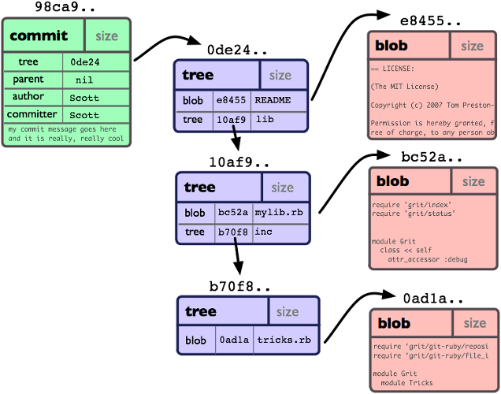
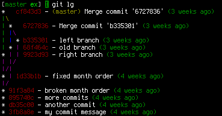

Introducting Git
A quick introduction to Git for aspiring developers
Heads Up
Git is distributed version control system focused on speed, effectivity and real-world usability on large projects.
Version Control

Example: RCS
Version Control
{kind=link}
Examples: CVS, Subversion, Perforce
Version Control
{kind=link}
Examples: Git, Mercurial, Bazaar
Git primitives
Git is a stupid content tracker which only knows a 4 primitives or objects: blobs, trees, commits, and tags
Every object is identifiable by a unique SHA-1 hash code
Git primitives - Blobs

- Actual file contents
- Doesn't contain metadata, e. g. filename
Git primitives - Trees

- Directory information
- Contains references to blobs or other trees
Git primitives - Commits

- Contains metadata about each change introduced to the repository
- Points to a tree object representing the state of the repository at a specific time
Git primitives - Tags

- An arbitrary name for an object in the repository
Git primitives

The Staging Area - Git's Index
- A temporary and dynamic binary file that describes the directory structure of the entire repository
- Like a virtual directory representing your next commit
- Allows planning or composing your commits
Local operations
{kind=link}
States of a file
{kind=link}
- Pro Git 2.2 Git Basics Recording Changes to the Repository
.gitignore
- .gitignore or .git/info/excludes contain files which git should ignore.
- Usually contains temporary, IDE specific, and generated files
- .gitignore files apply to the current directory and its children
- .gitignore files in sub-directories override their parent's definitions
Initial setup
$ git config --global user.name "Your Name"
$ git config --global user.email you@example.com
$ git config --global color.ui auto
$ git config --global core.editor vim
You can find an extensive list of configuration options in git-config(1).
Basic usage
What you should know when working with git.
Basic usage - init, add, commit
$ git init
Initialized empty Git repository in /path/to/git-presentation/demo/.git/
$ echo "Hi" > README.txt
$ git add README.txt
$ git status
# On branch master
#
# Initial commit
#
# Changes to be committed:
# (use "git rm --cached ..." to unstage)
#
# new file: README.txt
#
$ git commit -m 'Initial commit'
[master (root-commit) e06170a] Initial commit
1 file changed, 1 insertion(+)
create mode 100644 README.txt
$ git log --oneline
e06170a Initial commit
Basic usage - add, diff
$ echo -e 'Hi there!\nHow are you?' > README.txt
$ cat README.txt
Hi there!
How are you?
$ git diff
diff --git a/README.txt b/README.txt
index b14df64..ceaeee6 100644
--- a/README.txt
+++ b/README.txt
@@ -1 +1,2 @@
-Hi
+Hi there!
+How are you?
$ git add README.txt
$ git commit -m 'Expand README.txt file'
[master 4a7ee78] Expand README.txt file
1 file changed, 2 insertions(+), 1 deletion(-)
$ echo 'Another file' > another.txt
$ echo 'Thanks, I am fine!' >> README.txt
$ git status
# On branch master
# Changes not staged for commit:
#
# modified: README.txt
#
# Untracked files:
#
# another.txt
no changes added to commit (use "git add" and/or "git commit -a")
Basic usage - interactive add
$ git add -i
staged unstaged path
1: unchanged +1/-0 README.txt
*** Commands ***
1: [s]tatus 2: [u]pdate 3: [r]evert 4: [a]dd untracked
5: [p]atch 6: [d]iff 7: [q]uit 8: [h]elp
What now> u
staged unstaged path
1: unchanged +1/-0 [R]EADME.txt
Update>> 1
staged unstaged path
* 1: unchanged +1/-0 [R]EADME.txt
Update>>
updated one path
What now> s
staged unstaged path
1: +1/-0 nothing README.txt
What now> a
1: [a]nother.txt
Add untracked>> 1
* 1: [a]nother.txt
Add untracked>>
added one path
What now> q
Bye.
Basic usage - interactive add (result)
$ git status
# On branch master
# Changes to be committed:
#
# modified: README.txt
# new file: another.txt
#
$ echo -e 'Hi there, sugar!\nHow are you?\nFine, thanks!' > README.txt
$ git diff
diff --git a/README.txt b/README.txt
index b9b7316..3ba2ffb 100644
--- a/README.txt
+++ b/README.txt
@@ -1,3 +1,3 @@
-Hi there!
+Hi there, sugar!
How are you?
-Thanks, I am fine!
+Fine, thanks!
Basic usage - interactive add (patch)
$ git add -p
diff --git a/README.txt b/README.txt
index b9b7316..3ba2ffb 100644
--- a/README.txt
+++ b/README.txt
@@ -1,3 +1,3 @@
-Hi there!
+Hi there, sugar!
How are you?
-Thanks, I am fine!
+Fine, thanks!
Stage this hunk [y,n,q,a,d,/,s,e,?]? e
###
### This will open a VIm session in which you can edit the diff
###
$ git status
# On branch master
# Changes to be committed:
#
# modified: README.txt
#
# Changes not staged for commit:
#
# modified: README.txt
#
Basic usage - diff (index)
$ git diff --staged
diff --git a/README.txt b/README.txt
index b9b7316..0885cc6 100644
--- a/README.txt
+++ b/README.txt
@@ -1,3 +1,3 @@
-Hi there!
+Hi there, sugar!
How are you?
-Thanks, I am fine!
+Thanks, I'm fine!
Basic usage - amending commits
$ git commit --amend -m 'Expand README.txt and added another.txt'
[master a468657] Expand README.txt and added another.txt
2 files changed, 3 insertions(+), 1 deletion(-)
create mode 100644 another.txt
$ git status
# On branch master
# Changes not staged for commit:
#
# modified: README.txt
#
no changes added to commit (use "git add" and/or "git commit -a")
$ git checkout README.txt
$ git status
# On branch master
nothing to commit (working directory clean)
Basic usage - revert
$ git revert HEAD
$ git log --oneline
4d34332 Revert "Expand README.txt and added another.txt"
a468657 Expand README.txt and added another.txt
4a7ee78 Expand README.txt file
e06170a Initial commit
$ cat README.txt
Hi there!
How are you?
Basic usage - reset
$ git reset --hard HEAD~1
HEAD is now at a468657 Expand README.txt and added another.txt
$ cat README.txt
Hi there, sugar!
How are you?
Thanks, I'm fine!
$ git log --oneline
a468657 Expand README.txt and added another.txt
4a7ee78 Expand README.txt file
e06170a Initial commit
Basic usage - stash
$ echo 'Let me show you how to stash.' >> README.txt
$ git status
# On branch master
# Changes not staged for commit:
#
# modified: README.txt
#
no changes added to commit (use "git add" and/or "git commit -a")
$ git stash
Saved working directory and index state WIP on master: b8440ec Add branch message to another.txt
HEAD is now at b8440ec Add branch message to another.txt
$ git stash list
stash@{0}: WIP on master: b8440ec Add branch message to another.txt
$ git stash show stash@{0}
README.txt | 1 +
1 file changed, 1 insertion(+)
$ git status
# On branch master
nothing to commit (working directory clean)
$ git stash pop
# On branch master
# Changes not staged for commit:
#
# modified: README.txt
#
no changes added to commit (use "git add" and/or "git commit -a")
Dropped refs/stash@{0} (306c9066def71d626613ed8197d238f6e4cf10d0)
$ git stash
Saved working directory and index state WIP on master: b8440ec Add branch message to another.txt
HEAD is now at b8440ec Add branch message to another.txt
$ git stash drop
Dropped refs/stash@{0} (9cd9221903b469261a9ef81e7d0033f39654197d)
$ git stash pop
No stash found.
Basic usage - branch
$ git branch
* master
$ git checkout -b new_branch
Switched to a new branch 'new_branch'
$ git branch
master
* new_branch
$ echo 'Hi from new_branch' >> another.txt
$ git commit -a -m 'Add branch message to another.txt'
[new_branch b8440ec] Add branch message to another.txt
1 file changed, 1 insertion(+)
$ cat another.txt
Another file
Hi from new_branch
git-rebase
git-rebase(1)
NAME
git-rebase - Forward-port local commits to the updated upstream head
Uhm, what?!
git-rebase (1)

- Source: Git Community Book / License: GPL2
git-rebase (2)

- Source: Git Community Book / License: GPL2
git-rebase (3)

- Source: Git Community Book / License: GPL2
git-rebase (4)

- Source: Git Community Book / License: GPL2
git-rebase (5)

- Source: Git Community Book / License: GPL2
Merge vs. rebase
{kind=link}
- Source: Git Community Book / License: GPL2
git-rebase - A word of advice
Rebasing changes history! Beware problems when you push already published changes after a rebase.
Rebasing an already published branch and pushing it again. That's a paddlin'.
Basic usage - merge
$ git checkout master
Switched to branch 'master'
$ cat another.txt
Another file
$ git merge new_branch
Updating a468657..b8440ec
Fast-forward
another.txt | 1 +
1 file changed, 1 insertion(+)
$ git log --oneline
b8440ec Add branch message to another.txt
a468657 Expand README.txt and added another.txt
4a7ee78 Expand README.txt file
e06170a Initial commit
$ git branch -d new_branch
Deleted branch new_branch (was b8440ec).
$ git branch
* master
Basic usage - rebase
git checkout -b rebase_demo
Switched to a new branch 'rebase_demo'
$ touch my_branch
$ git add my_branch
$ git commit -m 'Add my_branch demo file'
[rebase_demo 9c3b9ab] Add my_branch demo file
0 files changed
create mode 100644 my_branch
$ git checkout master
Switched to branch 'master'
$ touch master
$ git add master
$ git commit -m 'Add master demo file'
[master 5079a48] Add master demo file
0 files changed
create mode 100644 master
Basic usage - rebase (continued)
$ git checkout rebase_demo
Switched to branch 'rebase_demo'
$ git log --oneline
9c3b9ab Add my_branch demo file
[...]
$ git log --oneline master
5079a48 Add master demo file
[...]
$ git rebase master
First, rewinding head to replay your work on top of it...
Applying: Add my_branch demo file
$ git log --oneline
9daf093 Add my_branch demo file
5079a48 Add master demo file
[...]
Basic usage - cherry-pick
$ git branch -m rebase_demo cherry-pick_demo
$ git branch
* cherry-pick_demo
master
$ touch another_branch_file
$ git add another_branch_file
$ git commit -m 'Add another branch file'
[cherry-pick_demo db6f2d5] Add another branch file
0 files changed
create mode 100644 another_branch_file
$ git checkout master
Switched to branch 'master'
$ git log --oneline
5079a48 Add master demo file
[...]
$ git log --oneline cherry-pick_demo
db6f2d5 Add another branch file
[...]
$ git cherry-pick db6f2d5
[master f8b41a8] Add another branch file
0 files changed
create mode 100644 another_branch_file
$ git log --oneline
f8b41a8 Add another branch file
5079a48 Add master demo file
[...]
Basic usage - remote, clone
$ cd ..
$ git clone demo demo2
Cloning into 'demo2'...
done.
$ cd demo2
$ git log --oneline
f8b41a8 Add another branch file
[...]
$ git branch
* master
$ git branch -a
* master
remotes/origin/HEAD -> origin/master
remotes/origin/cherry-pick_demo
remotes/origin/master
$ git remote show
origin
$ git remote show origin
* remote origin
Fetch URL: /path/to/git-presentation/demo
Push URL: /path/to/git-presentation/demo
HEAD branch: master
Remote branches:
cherry-pick_demo tracked
master tracked
Local branch configured for 'git pull':
master merges with remote master
Local ref configured for 'git push':
master pushes to master (local out of date)
Basic usage - push
$ touch remote_add
$ git add remote_add
$ git commit -m 'Add file in clone'
[master 2c6d342] Add file in clone
0 files changed
create mode 100644 remote_add
$ git push
Counting objects: 3, done.
Delta compression using up to 8 threads.
Compressing objects: 100% (2/2), done.
Writing objects: 100% (2/2), 273 bytes, done.
Total 2 (delta 1), reused 0 (delta 0)
Unpacking objects: 100% (2/2), done.
To /path/to/git-presentation/demo
f8b41a8..2c6d342 master -> master
Basic usage - fetch (preparation)
$ cd ../demo
$ touch local_add
$ git add local_add
$ git commit -m 'Add file on remote'
[master 09996c1] Add file on remote
0 files changed
create mode 100644 local_add
$ git checkout cherry-pick_demo
Switched to branch 'cherry-pick_demo'
$ cd ../demo2
Basic usage - fetch, merge
$ git fetch
remote: Counting objects: 3, done.
remote: Compressing objects: 100% (2/2), done.
remote: Total 2 (delta 1), reused 0 (delta 0)
Unpacking objects: 100% (2/2), done.
From /path/to/git-presentation/demo
2c6d342..09996c1 master -> origin/master
$ git merge origin master
Fast-forwarding to: origin
Already up-to-date with master
Merge made by the 'octopus' strategy.
0 files changed
create mode 100644 local_add
$ git log --oneline
0113f88 Merge branch 'master', remote-tracking branch 'origin'
09996c1 Add file on remote
[...]
Basic usage - reset, rebase
$ git reset --hard HEAD~2
HEAD is now at 2c6d342 Add file in clone
$ git rebase origin/master
First, rewinding head to replay your work on top of it...
Fast-forwarded master to origin/master.
$ git log --oneline
09996c1 Add file on remote
[...]
Basic usage - pull
$ git pull
Updating 2c6d342..09996c1
Fast-forward
0 files changed
create mode 100644 local_add
$ git log --oneline
09996c1 Add file on remote
2c6d342 Add file in clone
[...]
When something went wrong
{kind=link}
Workflows
Git is a tool for designing VCS workflows
- Git itself doesn't impose a certain workflow
- It is our job to design (or choose) a workflow suitable for our needs
Workflows - git-flow
{kind=link}
- Source: A successful Git branching model
git-flow - Basics
- Main branches are master and develop
- master - source code of HEAD always reflects production-ready state
- develop - source code of HEAD always reflects state with latest delivered development changes for the next release
- Automatic nightly builds (continuous integration) are built from develop
- When develop reaches stable point and is ready to be released, all of the changes are merged back into master and tagged
- Each time when changes are merged back into master, this is a new production release by definition
git-flow - Supporting Branches
- Help in parallel development between team members, ease tracking of features, prepare for production releases and to assist in quickly fixing live production problems
- Always have a limited life time, since they will be removed eventually
- Feature branches
- Release branches
- Hotfix branches
git-flow - Feature Branches
- Used to develop new features for upcoming release
- Exists as long as the feature is in development, but will eventually be merged back into develop or discarded
- Starting:
$ git checkout -b myfeature develop - Finishing:
$ git checkout develop Switched to branch 'develop' $ git merge --no-ff myfeature Updating ea1b82a..05e9557 (Summary of changes) $ git branch -d myfeature Deleted branch myfeature (was 05e9557). $ git push origin develop - Note: --no-ff (or merge.ff=false) causes merge to always create new commit object, even if fast-forward was possible
- Benefit: Easy reverting and logical coherence of commits
git-flow - Feature Branches

git-flow - Release Branches
- Support preparation of a new production release
- Allow for minor bug fixes and preparing meta-data for a release (version number, build dates, etc.)
- No new features allowed
- Branched off from develop when desired state of the new release is almost reached
- Starting:
$ git checkout -b release-1.2 develop Switched to a new branch "release-1.2" # Update metadata to reflect coming release $ git commit -a -m "Bumped version number to 1.2" [release-1.2 74d9424] Bumped version number to 1.2 1 files changed, 1 insertions(+), 1 deletions(-) - Finishing:
$ git checkout master Switched to branch 'master' $ git merge --no-ff release-1.2 Merge made by recursive. $ git tag -a 1.2 $ git checkout develop Switched to branch 'develop' $ git merge --no-ff release-1.2 Merge made by recursive. # May lead to a merge conflict. If so, fix it and commit. $ git branch -d release-1.2 Deleted branch release-1.2 (was ff452fe).
git-flow - Hotfix Branches
- Much like release branches, albeit unplanned
- Used when critical bug in production must be resolved immediately
- Branched off from corresponding tag in master
- team members (on develop) can continue, while another person is preparing a quick production fix
- Starting:
$ git checkout -b hotfix-1.2.1 master Switched to a new branch "hotfix-1.2.1" # IMPORTANT: Update metadata to reflect coming release $ git commit -a -m "Bumped version number to 1.2.1" [hotfix-1.2.1 41e61bb] Bumped version number to 1.2.1 1 files changed, 1 insertions(+), 1 deletions(-) - Finishing:
$ git checkout master Switched to branch 'master' $ git merge --no-ff hotfix-1.2.1 Merge made by recursive. $ git tag -a 1.2.1 $ git checkout develop Switched to branch 'develop' $ git merge --no-ff hotfix-1.2.1 Merge made by recursive. $ git branch -d hotfix-1.2.1 Deleted branch hotfix-1.2.1 (was abbe5d6).
git-flow - Hotfix Branches

Alternative: GitHub Flow
- Anything in the master branch is deployable
- To work on something new, create a descriptively named branch off of master (ie: new-oauth2-scopes)
- Commit to that branch locally and regularly push your work to the same named branch on the server
- When you need feedback or help, or you think the branch is ready for merging, open a pull request
- After someone else has reviewed and signed off on the feature, you can merge it into master
- Once it is merged and pushed to master, you can and should deploy immediately
- Source: Issues with git-flow
Commit messages
A good commit message:
- Is concise and clear
- Has a short description as its first line, followed by a blank line
- Can be just a single line if it can be both brief and complete
- Describes the changes and rationale, at a high level
- Mentions any tickets ("Fixes #23, refs #23") fixed by the included changes.
- Mentions any caveats of the changes, unintended side effects, etc.
Commit messages
Format of a git commit message:
Capitalized, short (50 chars or less) summary
More detailed explanatory text, if necessary. Wrap it to about 72
characters or so. In some contexts, the first line is treated as the
subject of an email and the rest of the text as the body. The blank
line separating the summary from the body is critical (unless you omit
the body entirely); tools like rebase can get confused if you run the
two together.
List of fixed or referenced tickets.Commit messages - Real life example
Output of git log
commit 012bfbf41fdc466036f336c9033ecd188ce4ab4e
Author: Jochen Schalanda
Date: Thu Apr 12 18:10:40 2012 +0200
Upgraded to Gradle 1.0-rc-1, fixes #169
commit e77c11785e7bba8fd227a25b7e6cea2f83af16c2
Author: Jochen Schalanda
Date: Fri Mar 30 18:15:40 2012 +0200
Added init script for checkpdf-service
* The init script currently supports Debian-like Linux distributions
and uses 'daemon' for starting and stopping services (instead of
start-stop-daemon)
* fixes #56
commit 633a288cbb6c026f433a46bfb4854b2ef2677eb1
Author: Jochen Schalanda
Date: Fri Mar 30 11:00:14 2012 +0200
Added handling of empty HTTP bodies
* PdfChecker#isValidPdf() threw an IllegalArgumentException if the input
stream was null (i. e. the HTTP body was empty)
* fixes #82 Commit messages - Real life example
Output of git log --oneline
012bfbf Upgraded to Gradle 1.0-rc-1, fixes #169
e77c117 Added init script for checkpdf-service
633a288 Added handling of empty HTTP bodiesCommit messages - Further reading
Commit messages
Using WhatTheCommit.com. That's a paddlin'.
Aliases
Useful abbreviations, new commands, or shortcuts in general
Typical abbreviations:
git config --global alias.st status
git config --global alias.co checkout
git config --global alias.ci commit
git config --global alias.br branch
git st will run git status
Aliases
The process of creating a timestamped production tag can be automated with a simple script or a git alias like this one:
git config alias.datetag '!git tag $(date "+%Y%m%d%H%M")'With this alias, git datetag will create a new tag from HEAD with the current timestamp.
Aliases
git config --global alias.lg \
"log --graph --pretty=format:'%Cred%h%Creset -%C(yellow)%d%Creset %s %Cgreen(%cr)
%C(bold blue)<%an>%Creset' --abbrev-commit --date=relative"